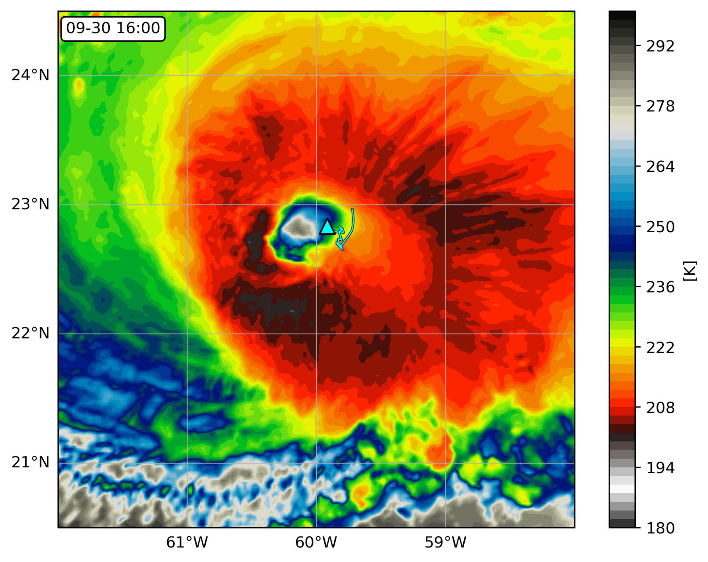
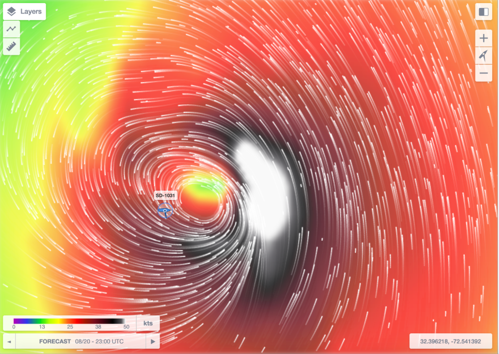
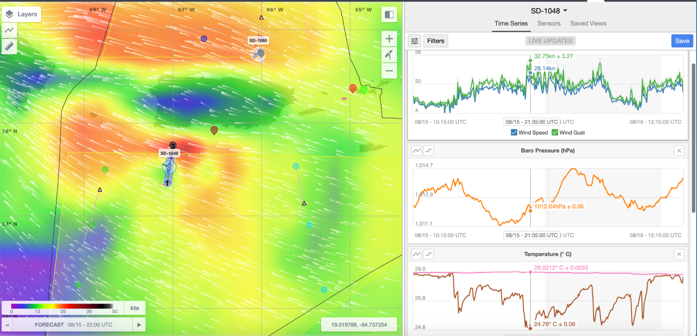
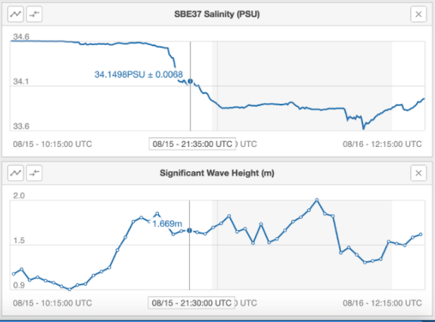
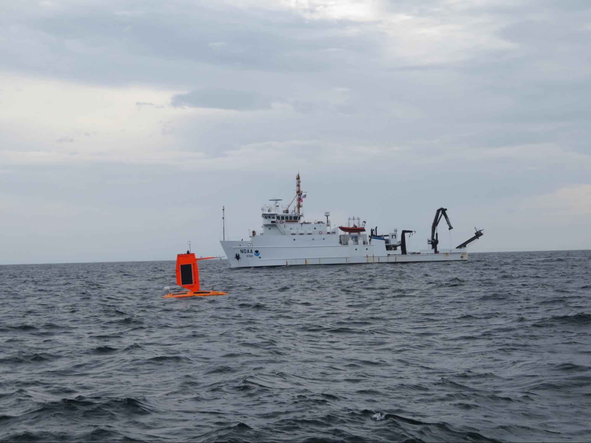
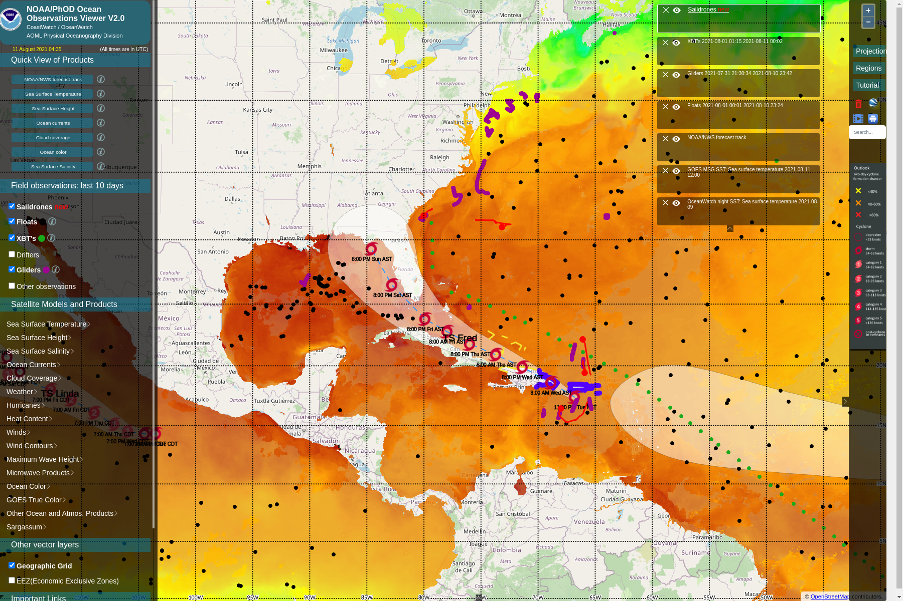

Saildrone 2021 Hurricane Mission Blog
September 30, 2021
Saildrone 1045 travelled into Hurricane Sam
One of the five saildrones PMEL and AOML deployed in the western Atlantic was steered into position to intercept Category 4 Hurricane Sam on September 30, 2021. The encounter required precise interpretation of hurricane forecasts and tight collaboration with saildrone pilots. The saildrone measured one-minute sustained wind speeds up to 90.6 mph (40.5 m/s) with wind gusts up to 126.4 mph (56.5 m/s), waves exceeding 46.4 ft (14.2 m), and saturated air near the surface. The saildrone was in the hurricane eye next to the eyewall at 16:00 UTC and was in sustained hurricane-force winds (at least 75 mph) for about two hours straight. The first ever drone camera images and video show a large amount of sea spray from the ocean surface and are a frightening display of the power of tropical cyclones.
This is the first time that sea surface conditions near a hurricane eye have been observed by an uncrewed vehicle. Its success is built upon years of partnership between NOAA and Saildrone, Inc., including testing in progressively more hostile environments and 5 years of innovative engineering on the platform, sensors, and data processing. It is the culmination of months of preparation prior to deployment and dedicated efforts by the NOAA science team and Saildrone pilots during the deployment. This animation shows how the saildrone intercepted Hurricane Sam, and this animation also shows how the saildrone was positioned to intercept Hurricane Sam with saildrone observations of Hurricane Sam.
Prior to Hurricane Sam, the NOAA saildrones also measured tropical storms Peter (9/21/2021), Henri (8/20/2021), Grace (8/17/2021) and Fred (8/13/2021).

August 21, 2021
Tropical Storm Henri Passed over Saildrone SD-1031
Tropical Storm Henri, which became the third hurricane of the 2021 Atlantic hurricane season, originated as a tropical depression off Bermuda on August 16 and intensified to a tropical storm one day later. The center of Tropical Storm Henri passed within about 50 km (30 miles) of SD-1031 between 20:00 and 24:00 UTC (4:00 - 8:00 pm ET) on 20 August 2021, with sustained winds of 60 knots (70 mph).
As winds measured by SD-1031 increased from 2 to 16 meters/second (35.8 mph), the measured barometric pressure dropped steadily from 1023 to 1001.8 hPa and wave heights rose to 3.8 meters (12 feet). Meanwhile, air temperature fell by ~3 °C and water temperature by ~2 °C. A NOAA research aircraft flew over the saildrone and deployed expendable atmospheric and oceanic instruments in its vicinity. Scientists at PMEL and AOML compared the saildrone ocean surface temperature and near-surface wind data to the aircraft measurements and found them to be consistent.

(N. Cokelet, G. Goni, C. Zhang)
August 18, 2021
Second Tropical Storm Observed by Saildrone
Tropical cyclone Grace passed over the NOAA PMEL/AOML 2021 Saildrone Hurricane Mission saildrones SD-1060 and SD-1048, located north and south of Puerto Rico, respectively, from 15 August 2021 02:00 to 16 August 2021 18:00. They measured barometric pressure south of Puerto Rico. The barometric pressure south of Puerto Rico dipped three times as winds increased to 12-14 m/s and reached its minimum of 1011 hPa at 18:40. Air temperatures fell by 3-4 °C during times of high winds, but the water temperature was much less affected. Wave heights rose to 2-2.5 m and fell in concert with the wind speed. Measured relative humidity rose markedly from 80% to nearly 100% corresponding with rainfall that freshened the sea surface salinity. Conditions at the base of the ecosystem, plankton chlorophyll concentration and sea water dissolved oxygen saturation, were affected differently by the cyclone’s passage.


(N. Cokelet, G. Foltz, C. Zhang)
August 15, 2021
NOAA Ship Nancy Foster meets Saildrone 1040
As the NOAA Research Vessel Nancy Foster was conducting an operational survey in the NOAA Gray’s Reef National Marine Sanctuary today, she met up with saildrone 1040, which was in the area for hurricane observations. Data from the ship and saildrone will be compared after both missions are completed. More information is available at:
Facebook: https://www.facebook.com/graysreefsanctuary/posts/1015912150897163
Twitter: https://twitter.com/GraysReefNMS/status/1427999243566915595

August 13, 2021
Tropical Cyclone Fred passes near Saildrone sd-1048
The NOAA PMEL/AOML 2021 Saildrone Hurricane Mission has had its first encounter with a tropical cyclone. Tropical storm Fred, heading northwestward, passed nearest to saildrone sd-1048 just after midnight on 11 August 2021. This map shows forecast winds of ~35 knots and sd-1048’s location ~150 nm west of the cyclone’s center at that time.

The minimum barometric pressure measure near the center of Fred is 1011.3 hPa.Air temperatures fell from 28.5°C to its minimum of 24.3°C during times of high winds, but the water temperature was much less affected. The atmosphere’s relative humidity rose markedly from 75% to 98% corresponding with rainfall that freshened the sea surface salinity, which reached its minimum at the same time. Fred looks to be heading toward the west coast of Florida at storm intensity (34 to 63 knot surface winds).
August 11, 2021
The saildrone south of Puerto Rico recorded Tropical Depression Fred as it passed by.
